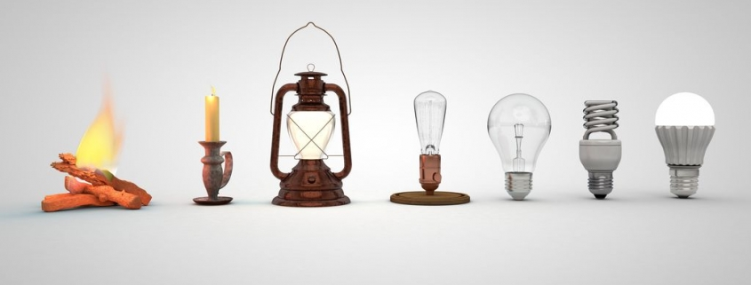

✨ Historia del Arte Luz
El Arte Luz, también conocido como Light Art, es una corriente artística contemporánea que utiliza la luz como elemento principal de expresión visual. A diferencia de las obras tradicionales que emplean pintura o escultura, el arte luz transforma los espacios mediante el uso de fuentes de luz artificial, como tubos fluorescentes, luces LED, neón y proyecciones digitales. Este tipo de arte busca jugar con la percepción, el color y el espacio, generando atmósferas envolventes que muchas veces invitan al espectador a interactuar con la obra. Los orígenes del Arte Luz se remontan a mediados del siglo XX, cuando artistas como László Moholy-Nagy comenzaron a experimentar con la luz, el movimiento y la proyección en sus obras. Sin embargo, fue en la década de 1960 cuando este estilo artístico comenzó a consolidarse con mayor fuerza. Destacan artistas como Dan Flavin, quien trabajaba con tubos fluorescentes para crear composiciones geométricas luminosas, y James Turrell, quien exploró la percepción visual mediante habitaciones llenas de color y luz. El Arte Luz ha sido influenciado por movimientos como el arte cinético y el minimalismo, y en la actualidad se encuentra presente en museos, galerías y espacios públicos alrededor del mundo. Estas instalaciones suelen ser grandes, inmersivas y a menudo interactúan con el entorno, alterando la forma en que las personas perciben el espacio que habitan. Gracias a los avances tecnológicos, hoy en día los artistas tienen más herramientas que nunca para jugar con la iluminación, creando experiencias sensoriales únicas que inspiran tanto a niños como a adultos.
Galería: Ejemplos del Arte Luz

